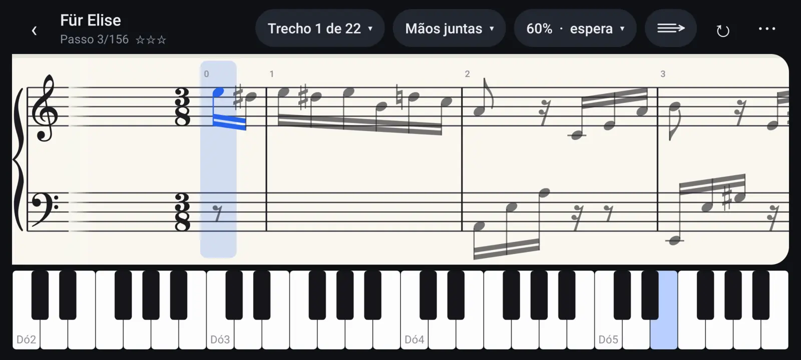
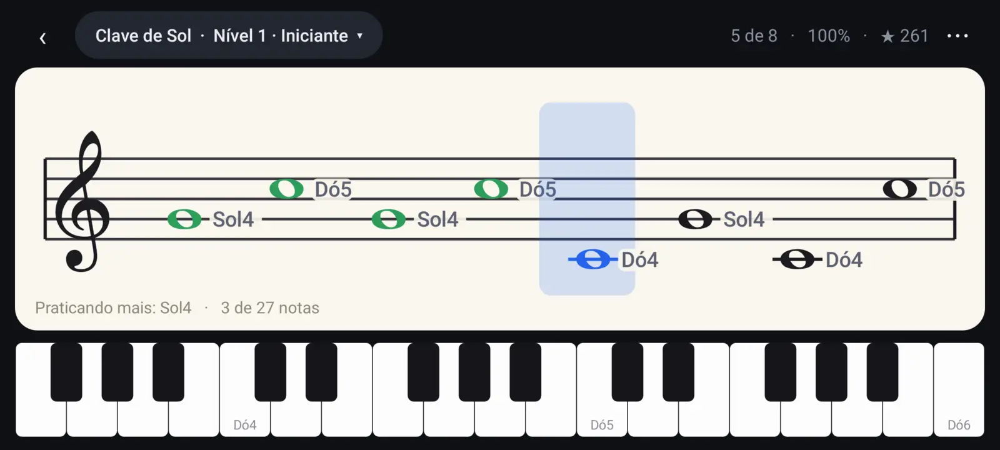
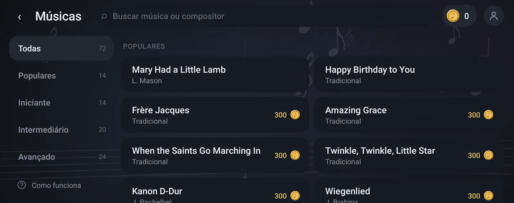
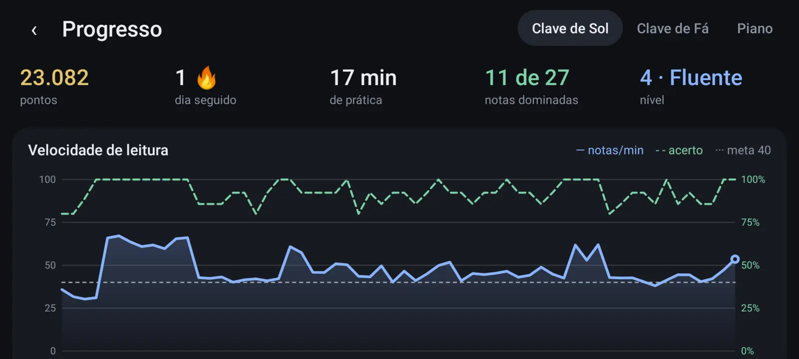

Escola em trilha
24 aulas em 8 unidades, uma depois da outra: o teclado e as mãos, leitura, ritmo, mão esquerda, escalas, sustenidos e bemóis, acordes. Cada aula tem uma meta curta.
Android · teste aberto para inscrições
Conecte seu teclado ao celular ou tablet e o Pianzo escuta cada nota: mostra a partitura, diz se você acertou e te leva da primeira tecla até músicas completas com as duas mãos.

Um método só, do começo ao fim — e você pratica no seu teclado, não numa tela de vidro.
24 aulas em 8 unidades, uma depois da outra: o teclado e as mãos, leitura, ritmo, mão esquerda, escalas, sustenidos e bemóis, acordes. Cada aula tem uma meta curta.
Für Elise, Gymnopédie, o Minueto de Bach e muito mais, com as duas mãos. Aprenda por trechos, escolha o andamento e deixe a partitura esperar você tocar.
Comece com três notas e ganhe novas conforme acerta. O treino foca na nota que você mais erra e tira as ajudas aos poucos, do Iniciante ao Mestre.
Dedilhado com escalas e arpejos, ritmo com metrônomo, acordes e intervalos, e treino de ouvido. Ao fim de cada passada, um conselho sobre o que melhorar.
Nível de pianista, dias seguidos, conquistas e um gráfico de evolução. Com uma conta, o progresso vai para a nuvem e segue você em outros aparelhos.
Cores pensadas para daltônicos, sempre com uma forma junto (✓ e ✕). Em português, inglês, espanhol e italiano.
Leitura
Linhas curtas de notas na clave de Sol, de Fá ou no piano inteiro. Você toca, o Pianzo marca na hora: certo em verde, errado do lado. A velocidade e o acerto ficam guardados para você ver sua evolução.

Músicas
Músicas populares para começar e peças clássicas completas, do nível iniciante ao avançado. Escute antes, pratique cada mão separada e junte as duas quando estiver pronto.

Progresso
Dias seguidos, tempo de prática, notas dominadas e a curva da sua velocidade de leitura. Pequenas vitórias que fazem você voltar amanhã.

Qualquer teclado ou piano digital com MIDI. O app detecta sozinho.
Um cabo OTG (USB-C ou micro-USB → USB-A) ligado na porta USB TO HOST do teclado. Pluga e toca.
Teclados com Bluetooth MIDI ou com um adaptador (como o Yamaha UD-BT01/MD-BT01). O app lembra o teclado e reconecta sozinho.
Ainda não tem um? Dá para começar no teclado da própria tela e conectar o de verdade quando ele chegar.
Programa de testes
O Pianzo está em fase de testes na Google Play. Testadores usam o app antes de todo mundo e ajudam a decidir o que vem a seguir.
É preciso um celular ou tablet Android. Por enquanto não há versão para iPhone ou iPad.
Obrigado, . Assim que liberarmos o , você recebe um e-mail com o convite.
Depois de liberado, o convite também fica em play.google.com/apps/testing/com.pianzo.app — abra com a mesma conta Google.
Não para começar: dá para tocar no teclado da tela. Mas o Pianzo foi feito para o teclado de verdade, e é nele que você aprende a tocar.
Qualquer teclado ou piano digital com saída MIDI por USB (porta “USB TO HOST”) ou Bluetooth MIDI — Yamaha, Casio, Roland, Korg e outros. Pelo cabo você precisa de um adaptador OTG para o celular.
Ainda não. O Pianzo é para Android (celular ou tablet). Um tablet deixa a partitura maior e é o jeito mais confortável de usar.
Dá para usar de graça: a Escola, os treinos e as músicas que você libera com as moedas ganhas praticando. O plano Premium, opcional, libera todas as músicas, a leitura sem limite e o Progresso completo.
Só usar o app como usaria normalmente e, se puder, contar o que achou — o que ficou confuso, o que deu errado, o que faltou. Para responder, basta o e-mail do convite.
O nome e o e-mail da inscrição servem só para liberar o teste e falar com você sobre ele. Sem anúncios, sem rastreamento, sem venda de dados. Detalhes na Política de Privacidade.